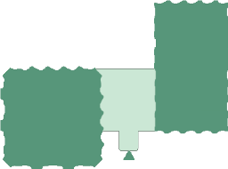
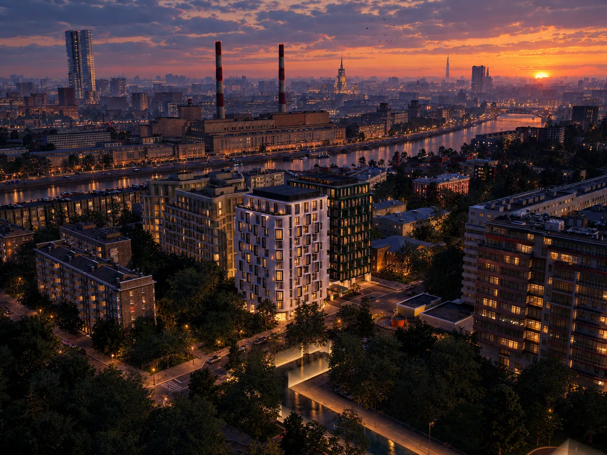
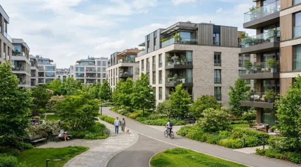

Загрузка…
Показать недоступные
Строение
Спален
Этаж
Площадь, м²
Цена, млн ₽
Тип
Доп. функции
Загрузка…
Загрузка…
Загрузка…



рус
О проекте

Современный жилой квартал, созданный для жизни в гармонии с природой.
Проект реализован с учетом всех современных стандартов комфорта и безопасности. Квартал включает в себя разнообразные объекты инфраструктуры, зеленые зоны отдыха и современные детские площадки. Здания спроектированы с учетом максимальной энергоэффективности и комфортной планировки жилых помещений.
Проект реализован с учетом всех современных стандартов комфорта и безопасности. Квартал включает в себя разнообразные объекты инфраструктуры, зеленые зоны отдыха и современные детские площадки. Здания спроектированы с учетом максимальной энергоэффективности и комфортной планировки жилых помещений.
рус
рус